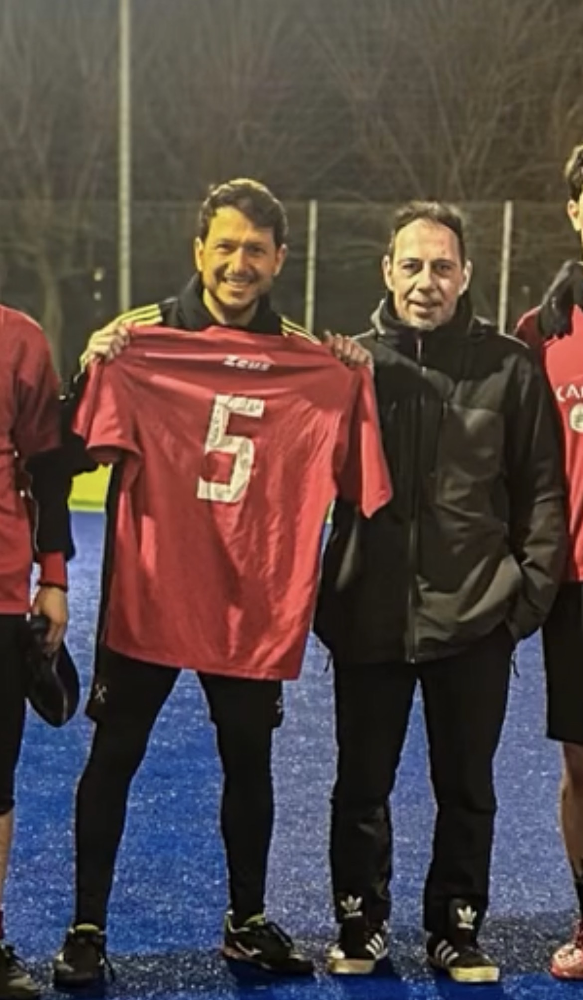

DAL CLUB · 24 NOVEMBRE 2026
JOYEUX ANNIVERSAIRE, JEDINO! 🇫🇷

Eric Bonifai, alias Jedino, è uno di quei personaggi che non hanno bisogno di essere sempre presenti per lasciare il segno.
Presenze rare, ma mai banali. Quando risponde presente, il numero 5 diventa un autentico punto di riferimento, dentro lo spogliatoio e sul terreno di gioco. Indicazioni tattiche, esperienza, personalità e capacità di mantenere compatto il gruppo.
In questa stagione non ha ancora voluto scendere in campo. La Laickersiana attende il suo ritorno: quando risponderà presente lo Jedino?
Da tutta la famiglia Laickersiana, tantissimi auguri!
LA SQUADRA TI ASPETTA, JEDINO! ❤️💙
Allez les garçons! 🇫🇷